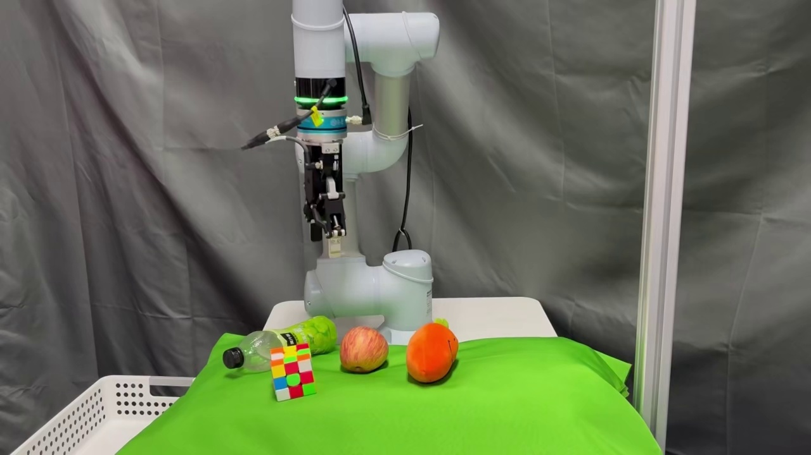
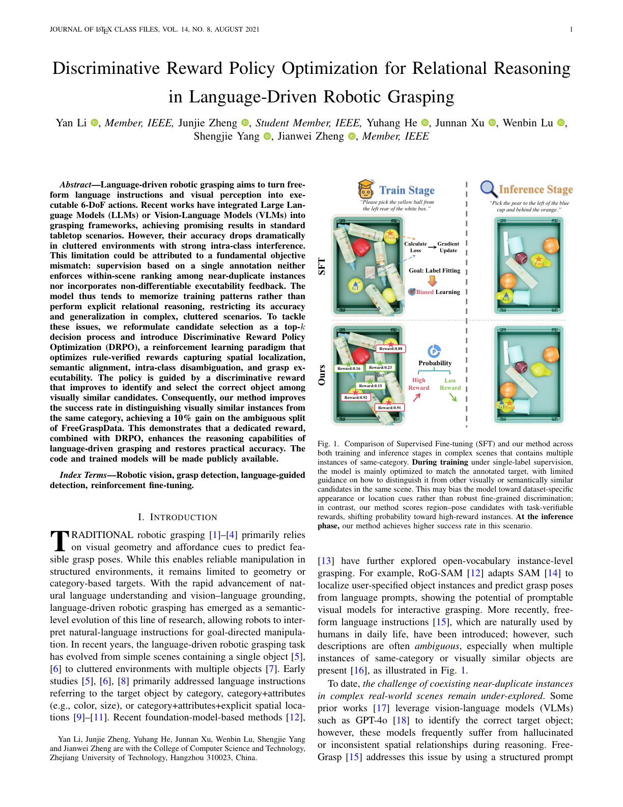

IEEE TMM Project Page
Discriminative Reward Policy Optimization for Relational Reasoning in Language-Driven Robotic Grasping
A reinforcement learning framework that turns top-k grasp selection into a reward-driven reasoning problem for cluttered, language-conditioned robotic manipulation.
College of Computer Science and Technology, Zhejiang University of Technology
Supplementary Preview

Why it matters
DRPO directly optimizes spatial localization, semantic alignment, intra-class disambiguation, and grasp executability.
Overview
Relational reasoning should be rewarded, not assumed.
Existing language-driven grasping systems often learn from a single labeled target and can overfit to appearance or location shortcuts in cluttered scenes. DRPO reframes grasp candidate selection as a reward-guided policy optimization problem, so the model is trained to explicitly distinguish between visually similar objects under free-form language instructions.
Abstract
Language-guided grasping in cluttered scenes
Language-driven robotic grasping aims to turn free-form language instructions and visual perception into executable 6-DoF actions. Recent works have integrated Large Language Models (LLMs) or Vision-Language Models (VLMs) into grasping frameworks, achieving promising results in standard tabletop scenarios. However, their accuracy drops dramatically in cluttered environments with strong intra-class interference. This limitation could be attributed to a fundamental objective mismatch: supervision based on a single annotation neither enforces within-scene ranking among near-duplicate instances nor incorporates non-differentiable executability feedback.
To tackle these issues, we reformulate candidate selection as a top-k decision process and introduce Discriminative Reward Policy Optimization (DRPO), a reinforcement learning paradigm that optimizes rule-verified rewards capturing spatial localization, semantic alignment, intra-class disambiguation, and grasp executability. Our method achieves a 10% gain on the ambiguous split of FreeGraspData and demonstrates robust real-robot execution in language-guided grasping scenarios.
Highlights
What DRPO changes
Top-k policy learning
Candidate selection is reformulated as a ranked decision process instead of one-shot label fitting.
Verifiable rewards
Spatial localization, semantic alignment, intra-class disambiguation, and grasp executability are all evaluated with task-specific rules.
Ambiguity-aware grasping
The policy learns to separate near-duplicate objects in crowded scenes where language references are subtle and relational.
Supplementary Video
Robot execution under language instructions
The supplementary material video is embedded directly in the site and can also be opened as a standalone file if you prefer: download MP4.
Paper
Preview and download

The full manuscript is available as a PDF and linked directly from this page for easy sharing.
Citation
BibTeX
@article{li_drpo_grasping,
title = {Discriminative Reward Policy Optimization for Relational Reasoning in Language-Driven Robotic Grasping},
author = {Li, Yan and Zheng, Junjie and He, Yuhang and Xu, Junnan and Lu, Wenbin and Yang, Shengjie and Zheng, Jianwei},
note = {Manuscript prepared for IEEE Transactions on Multimedia},
url = {./assets/drpo-paper.pdf}
}